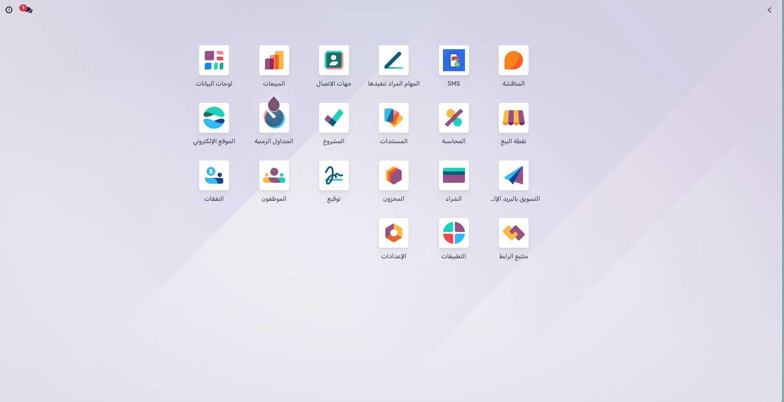
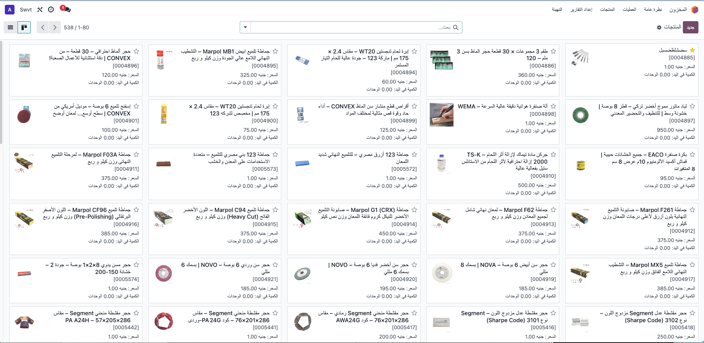
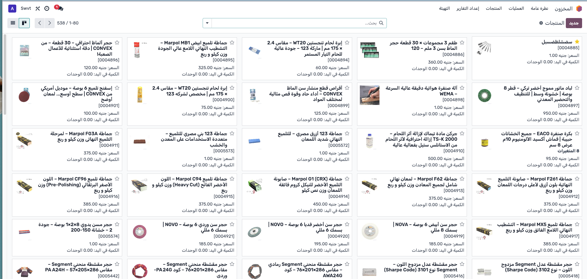
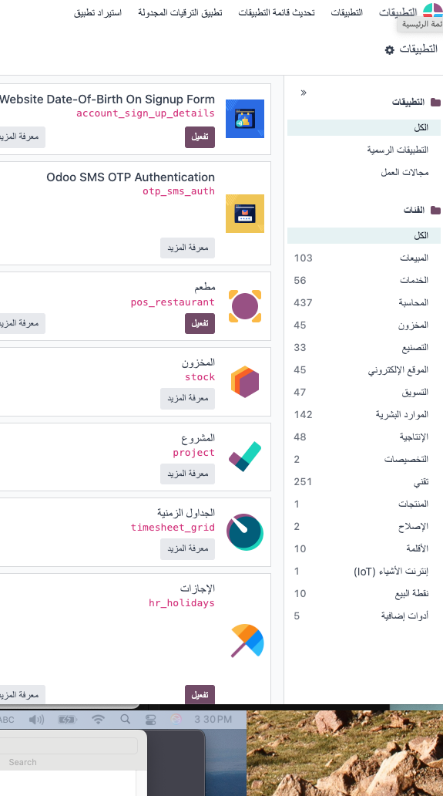
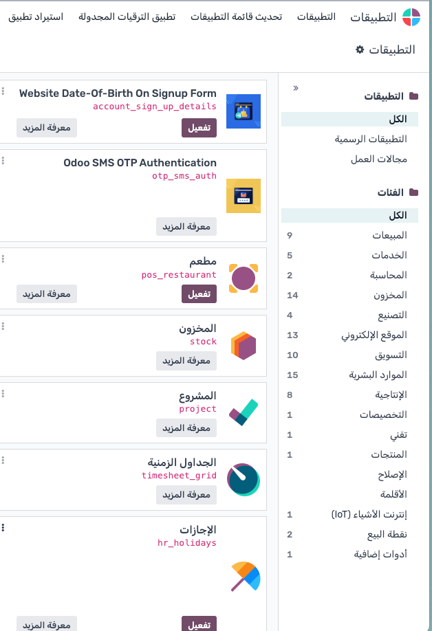
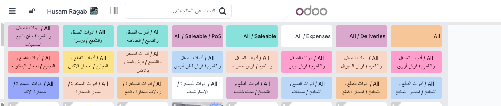

custom_addonsDeveloper Mode________________________________________
"يتميّز هذا الخط بجماله المستمد من وضوحه وبساطته. ورغم مظهره الهندسي العصري، فإنه يحافظ على التكوينات الخطية الكلاسيكية المستوحاة من قواعد الخط العربي الأصيل. تم استخدام خطي Noto Sans Arabic وRubik لتوفير أفضل تجربة قراءة داخل Odoo في الواجهة الخلفية وشاشة نقاط البيع.
________________________________________
قبل - الواجهة القديمة
بعد - خط Rubik مع Noto Sans Arabic
قبل - عرض تقارير
بعد - وضوح أفضل للنصوص
قبل - قائمة المنتجات
بعد - تحسين العرض داخل POS
قبل - نصوص داخلية غير واضحة
📧 Husam.ragab@icloud.com